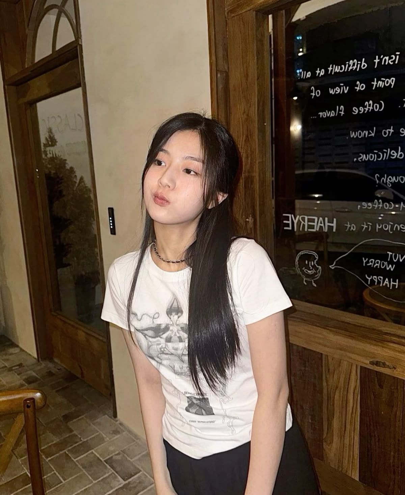

Born: 23 October 2002

My bini sekali Debut langsung jadi pemeran utama BJIRRRR di film Vanishing Time: A Boy Who
Returned saat umur 14.
selain jadi pemeran utama semoga taun depan jadi pemeran my bini beneran di IRL👉😅👈
cantiiikkknya gabikin ngebosenin euyyy!!!